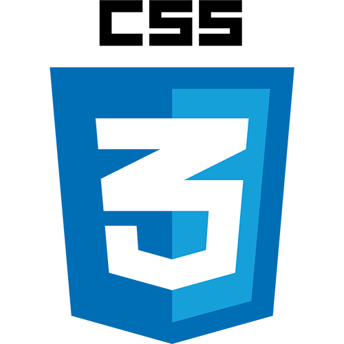
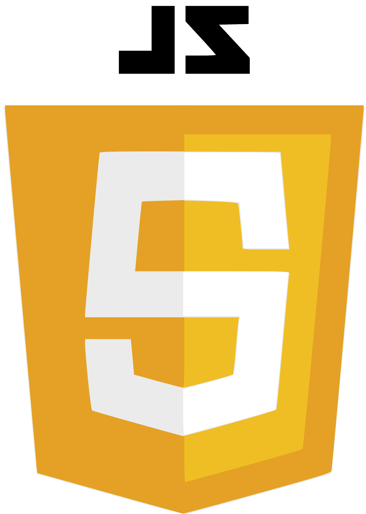
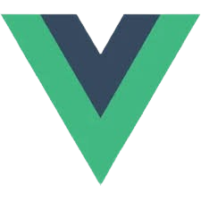

¿Quien soy?
Desarrollador Frontend trainee con interés en la creación de interfaces web modernas, accesibles y centradas en la experiencia del usuario. Trabajo principalmente con HTML, CSS y JavaScript, aplicando buenas prácticas para construir sitios web responsivos, claros y funcionales. Me encuentro en constante aprendizaje, mejorando mis habilidades y explorando nuevas herramientas del ecosistema frontend para seguir creciendo como desarrollador. Actualmente estoy en búsqueda de mi primera oportunidad profesional como desarrollador frontend, donde pueda aportar valor, seguir aprendiendo y formar parte de un equipo de trabajo. Estoy disponible para nuevos proyectos, colaboraciones y desafíos que me permitan seguir desarrollándome en el mundo del desarrollo web.
Tecnologías con las que trabajo


Tecnologías en aprendizaje
